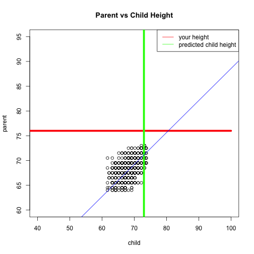

- Predict the height of your child.
- Plot the prediction within knowns data.
Aamarcha
The fitted model used to predict child height :
library(UsingR)
data(galton)
fitModel <- lm(child ~., data=galton)
Then the child height is predicted using the model and the input height (for the parent).
inputHeight <- c(76)
predict(fitModel,newdata=data.frame(parent=inputHeight))
The predicted height of the child is shown within the galton data.
